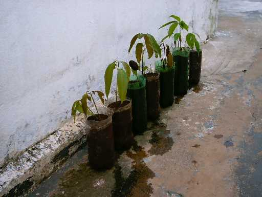
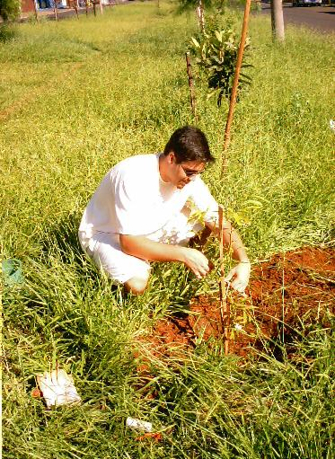

Neste dia,
plantamos 2 mudas no Quarteirão G
da Avenida Henrique Gregori:
Conseguimos
mais um colaborador, o Sr. Manoel, que irá cuidar das árvores.
No plantio, estava planejado que
plantaríamos 5 mudas, entretanto a condição seca do solo
e o mato alto, nos permitiu
plantar apenas 2 mudas.
Veja as fotos
do plantio:
 |
Uma foto
interessante: Uma Mangueira plantada pelo Sr. Sérgio,
produziu, naturalmente, 8 mudas.
Estas mudas em breve estarão plantadas
em outros locais, produzindo
frutos e novas mudas !!! |
|
Alexandre
cava com dificuldade o primeiro aceiro.
A terra começa a endurecer pela
falta de chuvas. |
|
O trabalho
requer mais esforço e suor extra... |
|
Mesmo
assim, o esforço é valido !
A muda de Ipê Amarelo está
plantada ! |
|
No segundo
aceiro, Danilo enfrenta a terra dura
e o mato alto ! |
|
Nosso
colaborador, Sr. Manoel, posa em baixo de uma de
suas árvores, previamente
cultivadas: O Chorão Mexicano. |
|
Ao fundo,
estão algumas árvores que o Sr. Manoel já cuidava. |
 |
Por fim,
Danilo planta e amarra a muda de Canelinha |
Neste plantio,
chegamos a colclusão que talvez teremos que esperar um
certo período para retornar ao
plantio das mudas, devido ao solo seco.
Antes, faremos mais algumas
tentativas para confirmar.
|